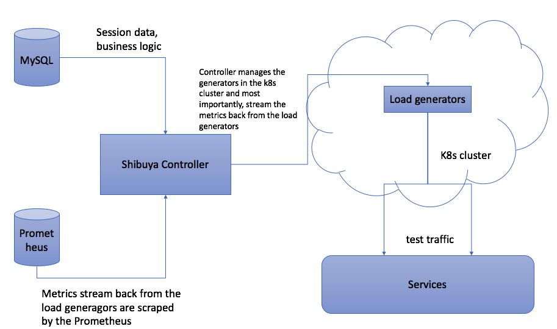

Setup the dependencies
Shibuya relies on below components:
- shibuya-controller: The actual process that handles all the Shibuya business logic
- Kubernetes: Shibuya deploys all the load generators into a kubernetes cluster
- MySQL: all the session data and business logic
- Grafana: Metrics collected by Prometheus will be rendered at Grafana
- Prometheus: Metrics collected from the load generators will be scraped by Prom.
We will discuss each of this dependencies separately.
Architecture Overview

Shibuya-controller
We don't limit how you deploy the shibuya controller. The process it self is running inside a Docker container and is listening on 8080 port. In this page, we will explain how you can build your own shibuya controller. Moreover, Each shibuya controller is configured by a configuration file called config.json. The details can be read here.
Kubernetes
Current supported versions should work well with Shibuya.
Please follow below steps to setup the k8s cluster:
kubect create ns shibuya-executors
Load generators
Jmeter
Currently Jmeter is the only engine Shibuya supports. (We need to provide a public Jmeter image)
Object Storage
We use object storage to store all the test plans and their related files, for example, csv files. Currently we support two types of storage:
- HTTP REST based API object storage(Nexus)
- GCP bucket.
Please go to here to see the detail guide.
MySQL
Internally, we are using fork of MySQL, MariaDB. But current versions of MySQL should work well with Shibuya.
All the schema files are stored under db folder. You just need to load the schemas into the database.